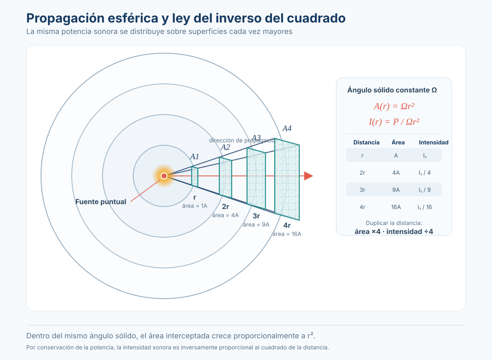

Sesión 8: Tipos de fuentes sonoras¶
Unidades y símbolos (glosario de referencia)
Consultá esta tabla cuando encuentres una unidad o símbolo que no conozcas. Cada término en el texto está vinculado a esta tabla.
¿De dónde viene el sonido? Fuentes puntuales, lineales y planas
No todas las fuentes emiten sonido de la misma manera. La forma y el tamaño de la fuente — en relación con la longitud de onda que emite — determinan cómo se propaga la energía en el espacio.
| Tipo de fuente | Geometría | Ejemplos | Caída de nivel con la distancia |
|---|---|---|---|
| Puntual (point source) | Una esfera diminuta (idealización) — el sonido se expande en 3D | Altavoz pequeño a frecuencias graves, un auto lejano, una persona hablando | −6 dB por duplicación de distancia (1/r²) |
| Lineal (line source) | Una línea continua de fuentes — el sonido se expande en 2D (cilindro) | Columna de altavoces (line array), tráfico en una autopista, un tren pasando | −3 dB por duplicación de distancia (1/r) |
| Plana (plane source) | Una superficie vibrante que emite ondas planas — sin divergencia | Grandes paneles radiantes, un pistón en un tubo, campo cercano de un altavoz grande | ~0 dB (sin atenuación por distancia en campo cercano) |

🎛️ Abrir simulación interactiva — Tres maneras de expandirse
Mueve el micrófono entre 1 y 16 metros y alterna entre fuente puntual, lineal y plana. Observa el frente de onda y la curva de caída de nivel: −6 dB, −3 dB o ≈ 0 dB por duplicación de distancia.
¿Por qué existe esta diferencia?¶
La energía total emitida por la fuente se conserva, pero se distribuye sobre un área cada vez mayor: - Fuente puntual: el área crece como \(r^2\) (superficie de una esfera) → la intensidad cae como \(1/r^2\). - Fuente lineal: el área crece como \(r\) (superficie de un cilindro) → la intensidad cae como \(1/r\). - Fuente plana: en campo cercano, el frente de onda es plano — no hay divergencia geométrica, el área no crece.
Campo cercano y campo lejano
Toda fuente tiene dos regiones acústicas distintas:
| Región | Distancia | Comportamiento | ¿Qué domina? |
|---|---|---|---|
| Campo cercano (near field) | \(r < 2d^2 / \lambda\) (aprox.) | Nivel fluctúa fuertemente con la posición. No vale la ley de −6 dB por duplicación. Interferencia compleja entre distintas partes de la fuente | Geometría de la fuente, modos de vibración |
| Campo lejano (far field) | \(r > 2d^2 / \lambda\) | Comportamiento predecible: −6 dB por duplicación (fuente puntual). El nivel solo depende de la distancia y la potencia | Divergencia geométrica |
| Símbolo | Nombre | Significado |
|---|---|---|
| \(r\) | Distancia desde la fuente | Distancia entre el centro acústico de la fuente y el punto de medición |
| \(d\) | Dimensión característica de la fuente | Diámetro del cono de un parlante, lado de un panel, etc. |
| \(\lambda\) | Longitud de onda | λ = 344 / f [m] |
Ejemplo práctico: ¿dónde empieza el campo lejano de un monitor de estudio?¶
Un monitor de estudio típico tiene un woofer de 6.5 pulgadas (\(d \approx 0.165\) m). A 1,000 Hz, \(\lambda = 0.344\) m.
A 1 kHz, el campo lejano empieza a solo 16 cm. Pero a 100 Hz (\(\lambda = 3.44\) m):
Apenas 1.6 cm — casi siempre estamos en campo lejano para frecuencias bajas. A 10 kHz (\(\lambda = 0.034\) m):
En tu posición de mezcla, estás en campo lejano y cercano al mismo tiempo
A 1 m de distancia (posición típica de mezcla con monitores de campo cercano), estás en campo lejano para frecuencias graves y medias, pero en campo cercano para los agudos. Por eso los tweeters suenan diferente si te movés unos centímetros — estás dentro del campo cercano del tweeter. Los monitores se llaman «de campo cercano» justamente porque están diseñados para usarse donde el campo directo domina sobre las reflexiones de la sala.
Directividad: no todas las fuentes emiten igual en todas direcciones
Una fuente omnidireccional emite la misma energía en todas las direcciones (como una bombilla de luz desnuda). Pero la mayoría de las fuentes reales son direccionales: concentran más energía en unas direcciones que en otras.
Factor de directividad (Q)¶
| Símbolo | Nombre | Significado |
|---|---|---|
| \(Q\) | Factor de directividad | Cuánto más concentrada está la energía en una dirección vs. una fuente omnidireccional de igual potencia total |
| \(\theta, \phi\) | Ángulos de observación | Dirección en coordenadas esféricas |
| \(I_{\text{real}}\) | Intensidad real en esa dirección | Lo que realmente se mide |
| \(I_{\text{omnidireccional}}\) | Intensidad que emitiría una fuente omnidireccional | \(W / 4\pi r^2\) |
Índice de directividad (DI)¶
| Q | DI | Ejemplo |
|---|---|---|
| 1 | 0 dB | Omnidireccional: fuente esférica ideal, parlante pequeño a baja frecuencia |
| 2 | 3 dB | Sobre un plano reflectante (suelo): energía se concentra en hemiesfera |
| 4 | 6 dB | En esquina de dos paredes (cuarto de esfera): parlante en esquina de sala |
| 8 | 9 dB | En esquina de tres paredes (octante) |
Insertar Fig. 3-4 del Everest: patrones polares — mostrando cómo una fuente que es omnidireccional a 100 Hz (λ = 3.44 m, mucho mayor que el parlante) se vuelve altamente direccional a 10 kHz (λ = 0.034 m, menor que el parlante). El patrón polar cambia con la frecuencia: cuanto más pequeña es λ comparada con el tamaño de la fuente, más direccional es la emisión.
Q y DI en refuerzo sonoro
En sistemas de PA, el Q de una caja acústica es un dato crítico: un altavoz con Q = 10 (DI = 10 dB) concentra 10 veces más energía hacia adelante. Esto significa que el sonido es más fuerte para la audiencia y más débil en el escenario (menos feedback). Las especificaciones de Q vs. frecuencia definen el «control de cobertura» de la caja.
Patrones polares: la huella digital de una fuente o micrófono
Un patrón polar es un gráfico que muestra cuánta energía emite (o capta) una fuente en cada dirección. Se mide en un plano (horizontal o vertical) y se representa en coordenadas polares con la atenuación en dB respecto al eje principal (0°).
| Patrón | Forma | Q (aproximado) | ¿Dónde se usa? |
|---|---|---|---|
| Omnidireccional | Círculo perfecto | 1 | Medición acústica, micrófonos de laboratorio, parlantes pequeños |
| Cardioide | ❤️ (corazón) — máximo a 0°, mínimo (−∞ teórico) a 180° | ~3-4 | Micrófonos vocales (rechaza sonido del monitor), grabación en vivo |
| Supercardioide | Más estrecho que cardioide, con lóbulo trasero pequeño. Nulo a ±125° | ~4-6 | Micrófonos de escenario con mayor rechazo lateral |
| Hipercardioide | Aún más estrecho, lóbulo trasero más grande. Nulo a ±110° | ~5-7 | Cine, broadcast — máximo aislamiento |
| Bidireccional (figura 8) | Dos lóbulos iguales (0° y 180°), nulo a ±90° | ~1.7 | Micrófonos de cinta, grabación estéreo Blumlein, entrevistas |
| Shotgun (cañón) | Lóbulo frontal muy estrecho, lóbulos laterales | ~10-40 | Cine, broadcast, deportes — capta a distancia sin sonido ambiente |
Insertar Fig. 3-5 del Everest: factor de directividad vs. frecuencia — nótese cómo el Q aumenta con la frecuencia. Una caja acústica omnidireccional a 100 Hz puede tener Q = 8 a 10 kHz. La directividad NO es constante con la frecuencia — todos los altavoces «estrechan» su cobertura en agudos.
Leyendo un patrón polar como un productor musical
El patrón polar de un micrófono te dice DÓNDE ubicarlo. Un micrófono cardioide en un escenario se orienta con el nulo (180°) apuntando al monitor de piso — así el cantante puede escucharse sin que el micrófono capte el monitor (y produzca feedback). En estudio, un bidireccional permite grabar dos fuentes enfrentadas (entrevista) con un solo micrófono.
Relación entre tamaño de la fuente, frecuencia y directividad
La directividad no es una propiedad fija — depende de la relación entre el tamaño de la fuente (\(d\)) y la longitud de onda (\(\lambda\)):
| Frecuencia | λ (aire, 20°C) | Diámetro de un parlante de 6.5" (0.165 m) vs. λ | Comportamiento |
|---|---|---|---|
| 100 Hz | 3.44 m | d ≪ λ (0.165 ≪ 3.44) | Omnidireccional — el sonido envuelve la caja |
| 1,000 Hz | 0.344 m | d < λ (0.165 < 0.344) | Transición — empieza a ser algo direccional |
| 10,000 Hz | 0.034 m | d ≫ λ (0.165 ≫ 0.034) | Muy direccional — el sonido se proyecta como un haz |
Consecuencias prácticas¶
| Situación | ¿Qué implica esto? |
|---|---|
| Monitores de estudio | Los graves envuelven la caja (vas a oírlos aunque estés a un costado). Los agudos salen en un haz estrecho — el tweeter debe apuntar directo a tus oídos. El «sweet spot» es el punto donde los ejes de ambos tweeters se cruzan |
| Subwoofers | Como trabajan por debajo de 120 Hz (λ > 2.9 m), son prácticamente omnidireccionales. Por eso un solo subwoofer alcanza y puede colocarse en casi cualquier lugar de la sala |
| Line arrays en vivo | Apilando múltiples parlantes en columna se crea una fuente lineal (cilíndrica). La caída es de solo −3 dB por duplicación (en vez de −6 dB), lo que permite cubrir grandes audiencias con nivel uniforme |
La ley del inverso del cuadrado: la fórmula que todo productor debe saber
Para una fuente puntual en campo libre (sin reflexiones), el SPL a una distancia \(r\) es:
En forma más práctica, comparando dos distancias \(r_1\) y \(r_2\):
| Símbolo | Nombre | Significado |
|---|---|---|
| \(\text{SPL}(r)\) | Nivel de presión sonora a distancia \(r\) | En dB SPL |
| \(\text{SWL}\) | Nivel de potencia sonora de la fuente | En dB SWL (re: 10⁻¹² W) |
| \(Q\) | Factor de directividad en la dirección de interés | \(Q = 1\) para omnidireccional |
| \(r\) | Distancia desde el centro acústico de la fuente | En metros |
| \(r_1, r_2\) | Dos distancias cualesquiera | \(r_2 > r_1\) |
Ejemplo de aplicación en estudio¶
Un monitor de estudio tiene sensibilidad de 90 dB SPL / 1W / 1m y Q ≈ 2 (está sobre una consola, hemiesfera). El ingeniero mezcla a 1 m de distancia con 1W. ¿Cuál es el SPL en la posición de escucha?
Si el asistente se aleja a 3 m para escuchar:
La diferencia es de casi 10 dB — a 3 m, el nivel es un tercio de la presión original.
Regla de oro del directo
Cada vez que duplicás la distancia, perdés 6 dB. Cada vez que reducís la distancia a la mitad, ganás 6 dB. Para compensar la duplicación de distancia, necesitás el cuádruple de potencia en el amplificador (+6 dB = ×4 en potencia). Esto explica por qué llenar un estadio requiere decenas de miles de vatios.
Basado en: Everest, F. A. & Pohlmann, K. C. (2009). Master Handbook of Acoustics (5th ed.). McGraw-Hill. Capítulo 3, pp. 31–45 (Sound in the Free Field — Point Sources, Line Sources, Plane Sources, Directivity, Polar Patterns, Near and Far Fields).